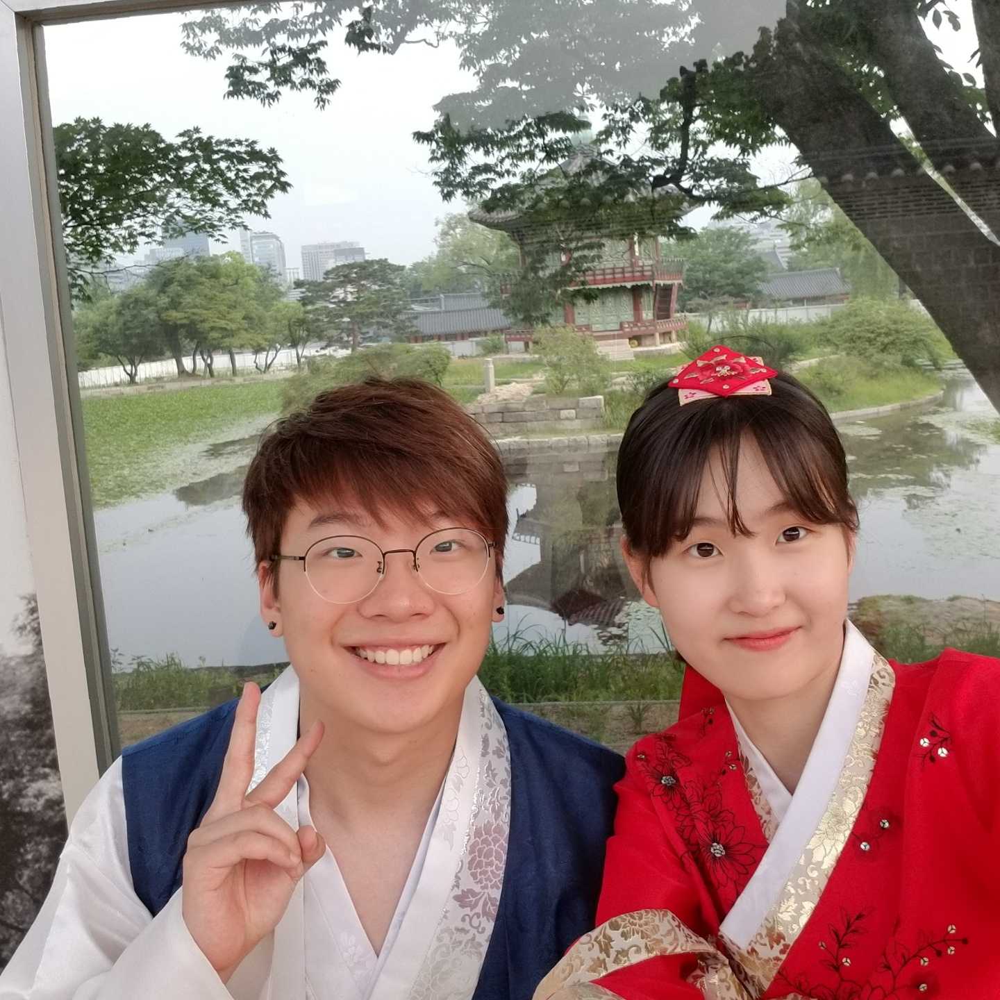
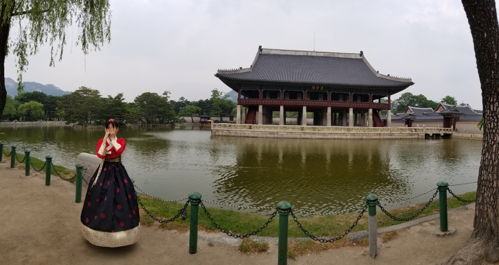
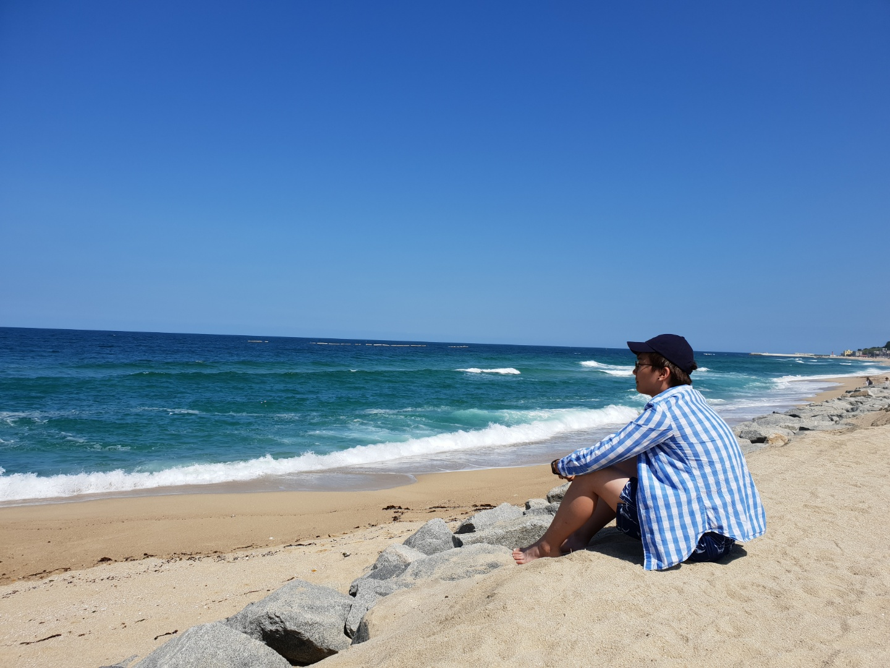
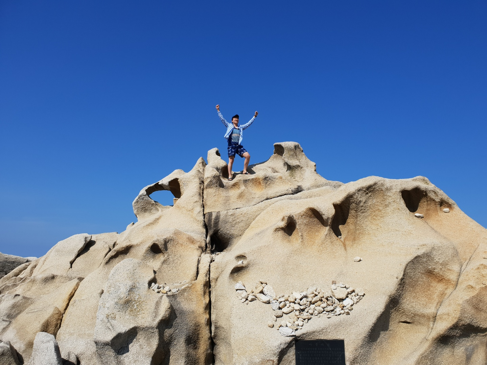
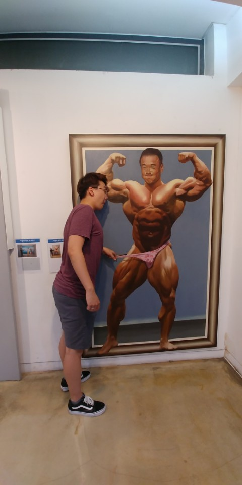

This summer, I had the luxury of going to Korea (first time in about 10 years). I had so many things that I wanted to do and see and realize about Korea and about myself. I felt like this solo trip to Korea would really enlighten me more about the variety of the world and about who I am in particular.
 What is Hanwoo?
What is Hanwoo?
I think the first thing that comes to mind among many things is the food. The food in Korea is so good. There's so much to eat and there's a lot of variety. There's just something about eating exotic foods that you never have access to in the US. And, in comparison to the food served here at Tech, I cry when I reminisce about the food that I ate in Korea. My favorite by far had to be the domesticated hanwoo steak there. This particular cut was around $50 (meat in Korea is very expensive). The steak literally melted in my mouth and I lack the vocabulary to give the experience justice. When you usually cut steak, it bleeds juices, but this steak didn't drop a single drop of juice while being cut. When you bite into it, every single bite overflows with savory flavors that I had never experienced before.
Another thing comes up when I think of Korea is the night. There, the age to party is 19 (American age) or 20 Korean age. So, I unfortunately could not do that. But, there is another form of nightlife that I found very enjoyable. There are lots of views and night lights and skylines to see in korea. I also went night biking along rivers. The view of the city while biking down a highway and riding right next to a myriad of cars was really appealing to me. I feel like that is not as accessible as anywhere else and biking in nature is nice, but I much prefer biking in Seoul during the night.
 I think my favorite thing to do that wasn't in regards to places or activities was to hang out with my family and friends. I think here in America, I was consumed with gaming and lost the sense of family after getting a lot of new family members (my mom remarried). In Korea, I felt a lot of what it meant to be a family again and revalued a lot of my actions and priorities. After spending time with my newphew and niece, I also realized that I want to be a dad. I want to raise beautiful kids (one daughter and one son, daughter first). I think this is probably the biggest thing that I learned about myself while in Korea. These pictures above are me at a Traditional Korean palace with my friend in Korea. I also got to try on traditional Korean clothing, so that was pretty neat! P.S. click on the photo of traditional clothing for more info on the palace!
 There's so much to see and do in Korea. I cannot wait to go back and enjoy it even more next time. I also want to travel to a lot more places and gain a lot of experiences and get to know myself more in the future. I think my trip this summer was a good eye opener, but I think there's so much more about myself and the world that I have yet to realize. Hopefully, Tech will be a place where I can grow that much more.
I had to see what my man was packing